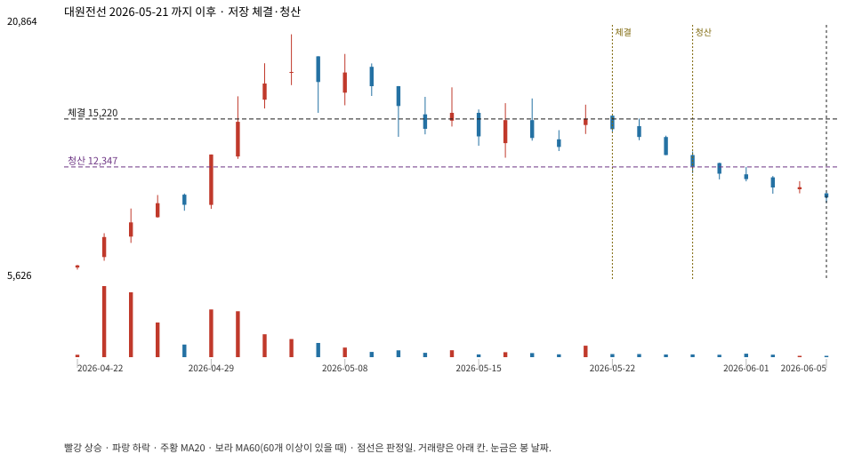

계좌를 다시 돌리지 않았다. 아래는 저장된 주문·체결·청산·비용·손익이다.

{
"case_id": "4eb1887671f29b8e",
"status": "closed",
"trade": {
"symbol": "006340.KS",
"signal_date": "2026-05-21",
"quantity": 387,
"entry": 15220,
"stop": 12353,
"target": 20300,
"planned_risk": 1122587.666194499,
"reserved_cash": 5896030.14,
"fill": {
"date": "2026-05-22",
"price": 15220,
"fee": 5890.14
},
"exit": {
"date": "2026-05-28",
"price": 12346.8235,
"reason": "stop",
"net_pnl": -1122587.6661944995,
"ambiguous_bar": false
}
},
"cost": "research fee 10bp each side, slippage 5bp; amounts below are the stored ledger, not a new run",
"chart": "c\/4eb1887671f29b8e.svg"
}